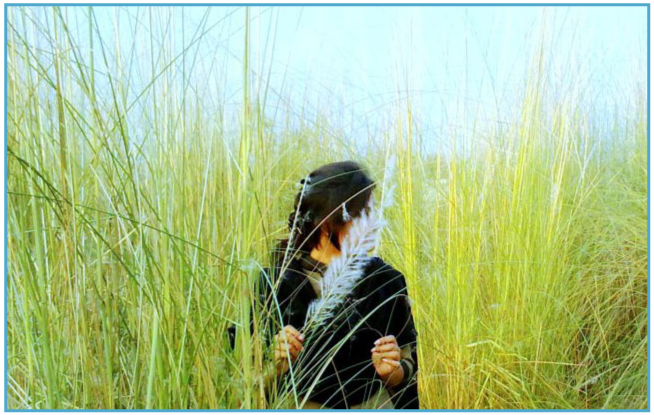

প্রচ্ছদকাহিনী :
কবিতা
ফেসবুক নোট :
পুষ্প ও বৃক্ষ কথা :
ফিচার :
চলচ্চিত্র
থিয়েটার
নাটকের মাইকেল
বাংলা নাটকের সাথে মাইকেল মধুসূদন দত্তের প্রথম সংযোগ ঘটে উত্তর কলকাতার বেলগাছিয়া থিয়েটারের মাধ্যমে। মূলত নাটকের মাধ্যমেই তিনি বাংলা সাহিত্যে লেখালেখির সূচনা করেন। খেয়ালী মধুসূদন দত্তের নাটক রচনার পটভূমিও নাটকীয়তায় ভরপুর।
আরো পড়ুন
আরো পড়ুন
চলচ্চিত্র - অপেক্ষা
ভালো গান গায় রবিউল আহসান। সে সূত্রে ঢাকায় আসা আজ পাঁচ/ছয় বছর। সম্প্রতি বাউল গানের একটি ক্যাসেট বের করার চেষ্টায় আছে সে। রবিউলের বাবা-মা খুব ছোটবেলায় মারা যান। দাদীর কাছে মানুষ সে। দীর্ঘদিন রবিউল বাড়ি যায়নি তাঁর দাদির সাথে দেখা করতে।
আরো পড়ুন
আরো পড়ুন
শরৎ স্রষ্টা – হীরক ওয়াজেদ
একটি শরৎকালের কথা ভেবে আমার হাজারটা শরৎ কাল চলে গ্যাছে,
পূর্ণিমার আলোয় যেমন রক্তকে লাল সুর্য মনে হয়
বিষের বোতল হাতে বসে থাকলে জীবনকে যেমন অভিমান মনে হয়,
ঠিক তেমনি কোনো তীব্র আবেগে আমি ভুলিয়ে দিয়েছি হাজারটা ঋতু বদল
ঠিক যে কারণে আমি বেঁচে থাকতে চেয়েও চাই না
ঠিক সে কারণে আমি ঘৃণা করি কাশের উত্তাপ মাখা শরৎকে
খোদ ঈশ্বর যদি আমায় ডেকে বলেন তোমার জীবনের হাজার বছর ফিরিয়ে দিলাম,
তোমাকে মুক্ত করলাম যন্ত্রণার সব স্মৃতি থেকে
আমি জানি আমি তীব্র কণ্ঠে তাঁকে বলবো আমি তীব্র ঘৃণা নিয়ে মরতে চাই।
আরো পড়ুন
পূর্ণিমার আলোয় যেমন রক্তকে লাল সুর্য মনে হয়
বিষের বোতল হাতে বসে থাকলে জীবনকে যেমন অভিমান মনে হয়,
ঠিক তেমনি কোনো তীব্র আবেগে আমি ভুলিয়ে দিয়েছি হাজারটা ঋতু বদল
ঠিক যে কারণে আমি বেঁচে থাকতে চেয়েও চাই না
ঠিক সে কারণে আমি ঘৃণা করি কাশের উত্তাপ মাখা শরৎকে
খোদ ঈশ্বর যদি আমায় ডেকে বলেন তোমার জীবনের হাজার বছর ফিরিয়ে দিলাম,
তোমাকে মুক্ত করলাম যন্ত্রণার সব স্মৃতি থেকে
আমি জানি আমি তীব্র কণ্ঠে তাঁকে বলবো আমি তীব্র ঘৃণা নিয়ে মরতে চাই।
আরো পড়ুন